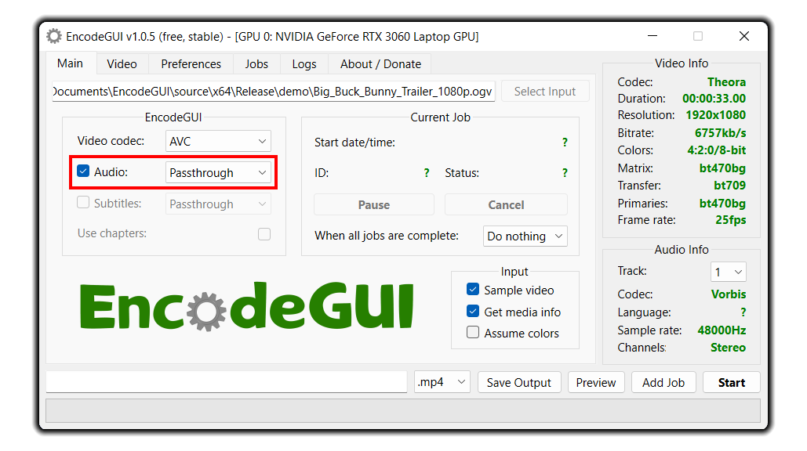
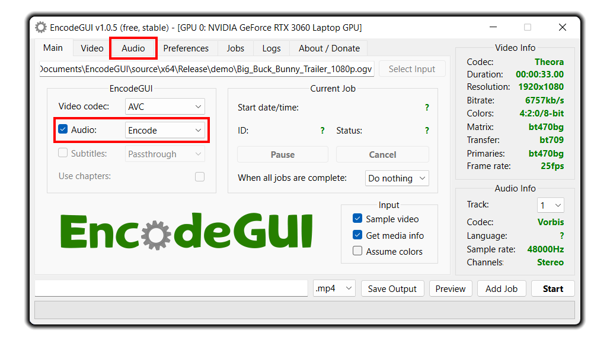
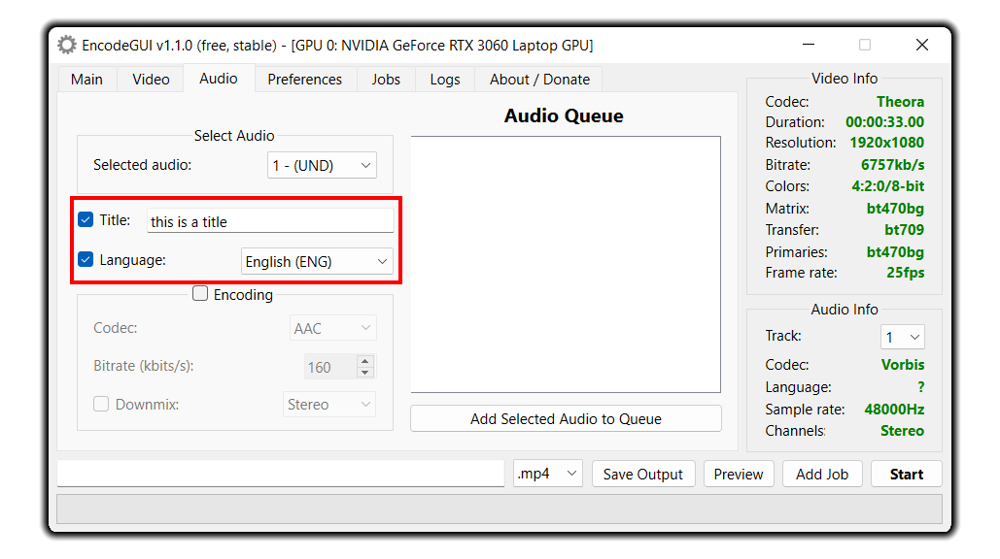
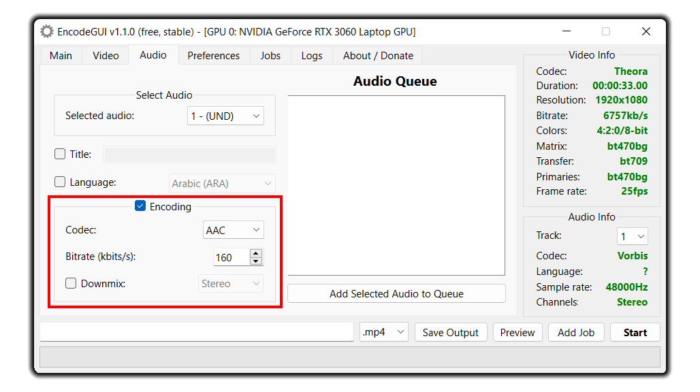
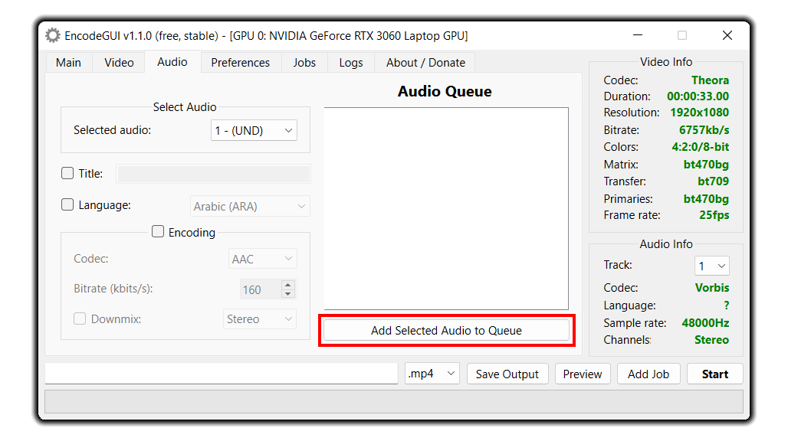

Audio Codecs
EncodeGUI consists of 6 audio codecs to choose from. Please refer to the chart below for the compatibility of each supported audio codec to each output video container. You will get an error when adding a job to the queue if there is an incompatibility with the audio codec to the output container.
| Codecs / Containers | .mp4 | .mkv | .mov | .avi | .asf | .ts | .flv | .3gp | .ogv | .webm |
|---|---|---|---|---|---|---|---|---|---|---|
| AAC | ✓ | ✓ | ✓ | ✓ | ✓ | ✓ | ✓ | ✓ | ||
| MP3 | ✓ | ✓ | ✓ | ✓ | ✓ | ✓ | ✓ | |||
| AC3 | ✓ | ✓ | ✓ | ✓ | ✓ | ✓ | ||||
| FLAC | ✓ | ✓ | ✓ | ✓ | ||||||
| Vorbis | ✓ | ✓ | ✓ | ✓ | ✓ | ✓ | ||||
| Opus | ✓ | ✓ | ✓ | ✓ | ✓ | |||||
| EAC3 | ✓ | ✓ | ✓ | |||||||
| ALAC | ✓ | ✓ | ✓ | |||||||
| WMA | ✓ | ✓ | ✓ | |||||||
| PCM | ✓ | ✓ | ✓ | ✓ | ||||||
| MP2 | ✓ | ✓ | ✓ | ✓ | ✓ | ✓ | ||||
| DTS | ✓ | ✓ | ✓ | ✓ | ||||||
| TrueHD | ✓ | ✓ | ✓ |
Enabling and Configuring Audio
The highlighted section in the photo below is where you set the state of the audio. Uncheck the Audio checkbox to disable/mute the audio in the output.

Select Encode in the drop-down menu to enable audio encoding. A new tab will appear at the top of the program:

Click the Audio tab and then select the audio track you wish to make changes to by using the drop-down menu under the Select Audio groupbox. Select the Encoding checkbox if you would like to make changes to the audio such as converting the codec. Below is where you can set the title and the language for the selected audio track:

Below are encoding options for the selected audio track.
Codec:
Sets the audio codec to encode to. See the section below for deatils of each codec.
Bitrate:
Sets the audio bitrate to encode to. Some audio codecs are more efficient than others. See below for more detailes.
Downmix:
An optional parameter that sets the number of audio audio channels to encode to. Any channels not included in the output are simply truncated. Using this tool won't upscale the number of channels.

Lastly, click the Add Selected Audio to Queue button and then the audio with the associated encoding settings (if defined) will be added to the queue. If you would like to remove an Audio job from the queue, simply right-click the job and then select the Remove option:

Audio Codecs in EncodeGUI
Below is a description of each audio codec in EncodeGUI and the recommended usage cases.
AAC
A general purpose audio codec and is one of the most popular audio codecs. Up to 6 audio channels are supported. The AAC codec in EncodeGUI uses the native FFMpeg AAC codec with a maximum bitrate of 512kb/s.
Recommended for: Universal support amongst devices, decent audio compression, up to 6 audio channels supported.
NOT recommended for: losses audio compression, high quality compression (due to native acc FFMpeg encoder).
MP3
Another popular codec, MP3 is again used primarily for general use and all-around support.
Recommend for: Support across virtually every device, fast encoding, acceptable compression quality.
NOT recommended for: High channel count audio (more than 2 channels isn’t supported), high quality compression, bitrate higher than 320kb/s (not supported).
AC3
This codec is popular amongst surround sound audio and is recommended for that purpose. It’s made by Dolby and is specially designed for Dolby Digital systems.
Recommended for: surround sound audio with up to 6 channels, high quality compression, videos intended to be streamed on Dolby Digital supported devices.
NOT recommend for: universal support across devices, lossless audio compression.
FLAC
A free and open source audio codec that allows lossless audio compression.
Recommended for: lossless audio quality (up to 3,200kb/s), up to 8 channels of audio, high bit depth audio (up to 24-bits per sample).
NOT recommended for: universal support across devices, wide support across video containers (only .mkv and .ogv supported).
Vorbis
Considered a special use codec. It’s compression quality is one of the best over any other audio codec.
Recommended for: Decent compression quality, up to an insane 256 audio channels, ease of use through constant audio quality option.
NOT recommended for: Lossless audio bitrate (theoretical maximum is 500kb/s), wide support across video containers (only .mkv, .ogv, and .webm) supported.
Opus
Not a very common codec, but it at least provides decent support across video containers. It also has one of the lowest latency for decoding which makes it ideal for videos intended to be streamed live (real-time).
Recommend for: decent support across video containers (.mkv, .ts, .ogv, .webm), real-time audio latency rating over wireless connections, up to an insane 255 audio channel support.
NOT recommended for: lossless audio compression (only 512kb/s maximum bitrate).
DTS
Used and ideal for high quality audio in surround sound. It is the next best alternative to Dolby audio codecs.
Recommend for: Surround sound audio and lossless audio compression
NOT recommended for: wide support (a lot of video players don't support DTS), high compression quality.
TrueHD
Used and ideal for high quality audio in surround sound. It is the prefered codec for Surround Sound and is capable of supporting Atmos.
Recommend for: Surround sound audio and lossless audio compression
NOT recommended for: wide support (a lot of video players don't support DTS), high compression quality, consistency (different variants)